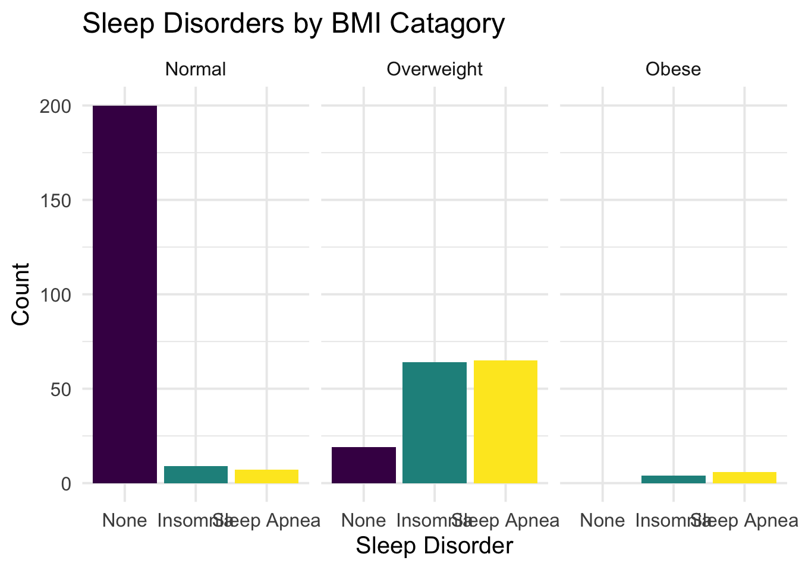
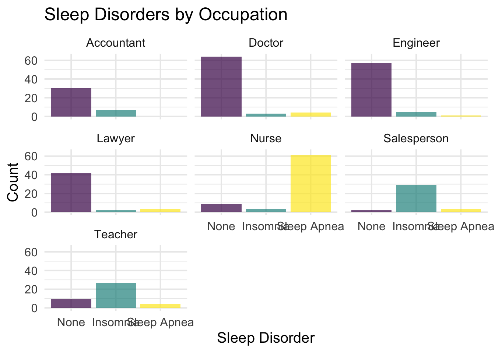
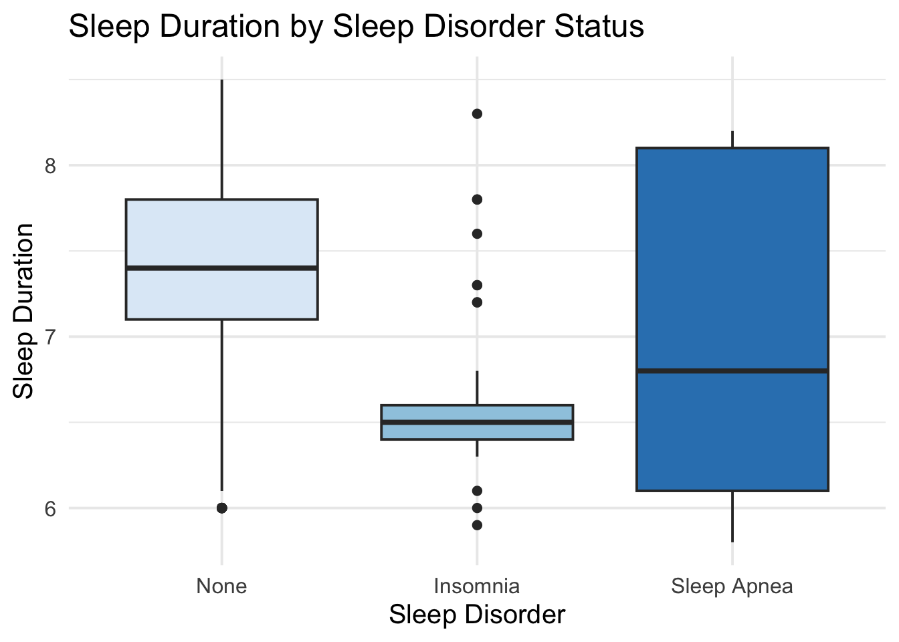

library(tidyverse)
library(plotly)
sleep <- read_csv(here::here("Sleep_health_and_lifestyle_dataset.csv"))|>
rename(
sleep_quality = `Quality of Sleep`,
sleep_duration = `Sleep Duration`,
physical_activity = `Physical Activity Level`,
stress_level = `Stress Level`,
bmi_category = `BMI Category`,
sleep_disorder = `Sleep Disorder`,
heart_rate = `Heart Rate`) |>
select(-`Person ID`, -`Blood Pressure`, -`Daily Steps`)|>
#Used Chat GPT to learn how to use fct_relevel and str_replace:
#prompt: How can I adjust the response "Normal Weight" to "Normal"?
mutate(bmi_category = str_replace(bmi_category,"Normal Weight", "Normal"),
Occupation = str_replace(Occupation, "Sales Representative", "Salesperson"),
#Prompt: How can I reorder facets and bars in my bar graph using factor?
bmi_category = fct_relevel(bmi_category, "Normal", "Overweight","Obese"),
sleep_disorder = fct_relevel(sleep_disorder, "None", "Insomnia", "Sleep Apnea")
)Importing/Cleaning Data:
Introduction
Sleep is an important component of overall health and is closely connected to both physical and mental well-being. Poor sleep can increased stress, reduced daily performance, and put you at a higher risk of health issues such as sleep disorders. This project is aimed to examine patterns across several variables including sleep duration, sleep quality, stress level, physical activity, BMI category, and sleep disorders.
Research Question
How do lifestyle and health factors such as occupation, physical activity, stress level, BMI category, and sleep disorders affect sleep duration and sleep quality?
Variables Description
Demographic Variables
Gender: Categorical variable indicating gender.
Age: Age of the individual.
Sleep Metrics
Sleep Duration: Number of hours an individual sleeps per night.
Quality of Sleep: A score representing sleep quality (typically on a scale, e.g., 1–10).
Sleep Disorder: Categorical variable indicating presence of a sleep disorder (e.g., None, Insomnia, Sleep Apnea).
Lifestyle Variables
Physical Activity Level: Measure of daily physical activity (often minutes per day).
Stress Level: Self reported stress level (ordinal scale).
Occupation: Job category of the individual.
Health Indicators
BMI Category: Categorical variable (e.g., Normal, Overweight, Obese).
Heart Rate: Recorded heart rate while sleeping.
Primary Visuals
Occupational Stress vs. Sleep Duration Plotly
by_occupation <- sleep|>
group_by(Occupation)|>
summarise(
n = n(),
avg_sleep_hrs = mean(sleep_duration),
avg_sleep_quality = mean(sleep_quality),
avg_stress = mean(stress_level),
avg_activity = mean(physical_activity))
sleep_vs_stress <- ggplot(data = by_occupation,
aes(x = avg_sleep_hrs,
y = avg_stress,
label = Occupation,
color = Occupation))+
geom_point(size = 4) +
geom_smooth(data = sleep,
aes(x = sleep_duration,
y = stress_level,
group = 1),
method = lm,
se = FALSE,
color = "grey90")+
labs(
title = "The Effects of Stress on Sleep by Occupation",
x = "Average Sleep Duration",
y = "Average Stress Level",
caption = "Each point is an Occupation"
) +
theme_minimal(base_size = 15)+
theme(legend.position = "none")+
scale_color_brewer(palette = "Paired")
ggplotly(sleep_vs_stress, tooltip = "label")Interpretation: This scatterplot examines the relationship between average sleep duration and average stress level across occupations. Each point represents an occupation, and the downward trend line shows a negative correlation between the two variables. Occupations with higher average sleep tend to report lower stress, while occupations with less sleep tend to report higher stress. Although this does not prove that sleep directly reduces stress, the graph suggests that sleep duration may be an important factor associated with perceived stress levels. A scatterplot was used because it is the most effective way to visualize the relationship between these two quantitative variables, making it easy to identify trends between average sleep duration and stress across occupations.
Sleep Disorders by BMI Category
ggplot(data = sleep,
aes(x = sleep_disorder,
fill = sleep_disorder))+
geom_bar()+
facet_grid(~bmi_category)+
theme_minimal(base_size = 11)+
theme(legend.position = "none")+
scale_fill_viridis_d()+
labs(
title = "Sleep Disorders by BMI Catagory",
x = "Sleep Disorder",
y = "Count")
Interpretation: This faceted bar graph shows how sleep disorders vary across BMI categories. Individuals in the normal BMI category most often report no sleep disorder, while those in the overweight category show noticeably higher counts of both insomnia and sleep apnea. In the obese category, sleep disorders make up a larger share of the group, especially sleep apnea. Overall, the graph suggests that as BMI increases, the likelihood of experiencing a sleep disorder also increases. A faceted bar graph was selected because it clearly compares the frequency of categorical sleep disorders across BMI groups while keeping each BMI category separate.
Sleep Disorder by Occupation
sleep |>
filter(Occupation != "Manager" & Occupation != "Software Engineer" & Occupation != "Scientist")|>
ggplot(aes(x = sleep_disorder,
fill = sleep_disorder)) +
geom_bar() +
facet_wrap(~Occupation) +
theme_minimal(base_size = 11) +
theme(legend.position = "none") +
scale_fill_viridis_d()+
labs(
title = "Sleep Disorders by Occupation",
x = "Sleep Disorder",
y = "Count"
)
Interpretation: This faceted bar graph shows that sleep disorder prevalence varies noticeably by occupation. Doctors, engineers, accountants, and lawyers most commonly report having no sleep disorder, while nurses show a very high rate of sleep apnea and teachers and salespeople have much higher counts of insomnia. This suggests occupation may be associated with different types of sleep issues, potentially due to varying stress levels, work schedules, or physical demands. Occupations Manager, scientist, and Software Engineer were removed due to small sample sizes and lowers the number of facets to 7. A faceted bar graph was appropriate here because it allows for quick comparisons of sleep disorder prevalence across multiple occupations without overcrowding a single graph.
Sleep Duration by Sleep Disorder
sleep |>
ggplot(aes(x = sleep_disorder,
y = sleep_duration,
fill = sleep_disorder)) +
geom_boxplot() +
theme_minimal(base_size = 15) +
theme(legend.position = "none") +
scale_fill_brewer()+
labs(
title = "Sleep Duration by Sleep Disorder Status",
x = "Sleep Disorder",
y = "Sleep Duration"
)
Interpretation: This boxplot shows that people without a sleep disorder typically have longer and more consistent sleep duration than those with insomnia, whose sleep duration is both shorter and tightly clustered around a lower median. Individuals with sleep apnea display the greatest variability in sleep duration, indicating their sleep patterns may be less predictable despite some reporting relatively long sleep duration. A boxplot was chosen because it summarizes the distribution of sleep duration within each sleep disorder by showing medians and range.
Conclusion
This analysis found meaningful relationships between sleep duration, stress level, BMI category, occupation, and sleep disorders. In particular, individuals with shorter sleep durations generally reported higher stress levels, while higher BMI categories were associated with a greater prevalence of sleep disorders such as sleep apnea. These findings suggest that both lifestyle and health-related factors may play an important role in overall sleep outcomes.
Limitations
One limitation of this dataset is its relatively small sample size of 374 individuals, which may limit how broadly these finding can generalize to. Additionally, the distribution of observations across occupations is uneven, with some occupations containing substantially more individuals than others.
A second limitation is that several variables, such as stress level and sleep quality, rely on self-reported data. Because these measures are subjective and based on individual perception, responses may vary significantly between individuals.
Future Research
Given more time, I would further explore how sleep quality is measured by wearable technology platforms such as Whoop and Apple Health. I would look into how these devices calculate metrics like “sleep score,” including which variables are used to determine it. Looking back on this project, I would have liked to compare how different wearable technologies measure and record sleep data. Examining differences in how these devices calculate and report sleep metrics could lead to some interesting findings